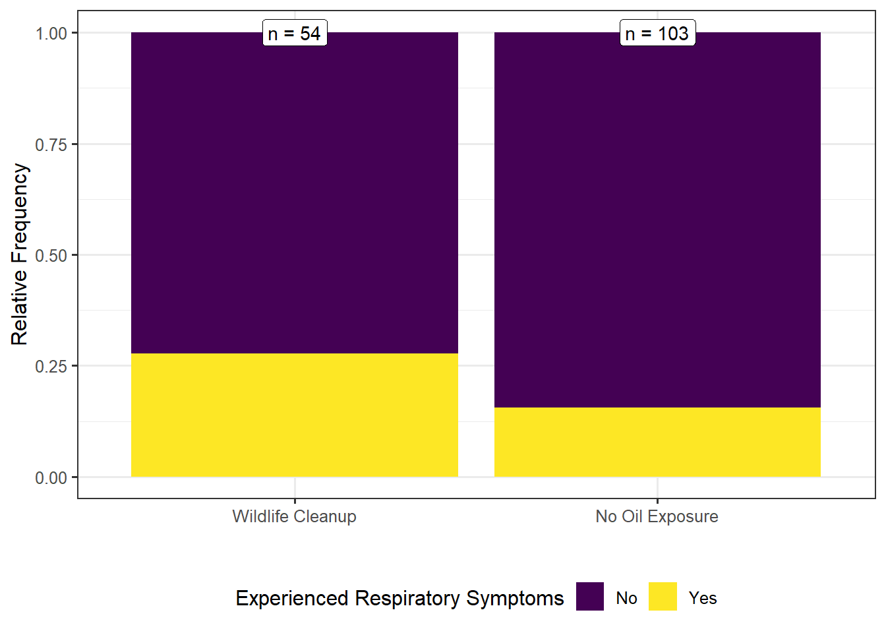
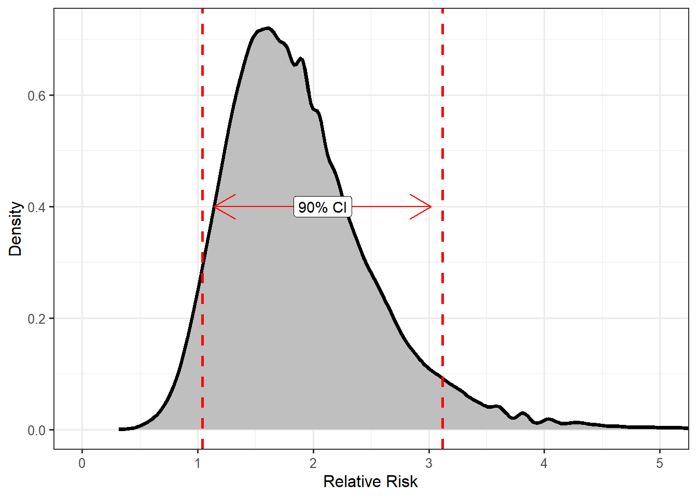
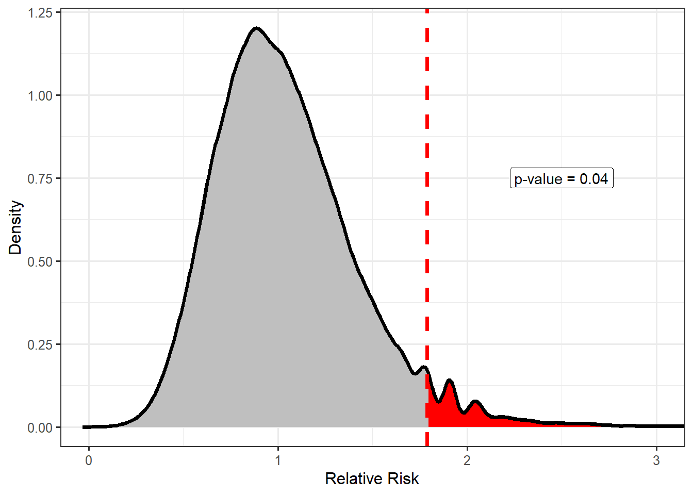

8 Using the Tools Together
In this unit, we have introduced the key components in both the language and logic of statistical inference. In fact, with a firm grasp of the concepts in this unit, you should be able to read and interpret key statistical findings. All statistical analyses make use of the Five Fundamental Ideas of Inference and alternate between the components of the Distributional Quartet. The context of each problem differs, but the logic remains the same. In this chapter, we present another analysis based on the Deepwater Horizon Case Study of Chapter 2, annotating it along the way to see how these elements work together fluidly to reach a conclusion. Specifically, we are interested in the following question:
Are volunteers assigned to clean wildlife at higher risk of developing adverse respiratory symptoms compared to those volunteers who do not come into direct contact with oil? If so, estimate the increased risk.
8.1 Framing the Question (Fundamental Idea I)
We are really interested in whether the rate of respiratory symptoms in one group of volunteers is larger than that in a second group. Therefore, our working assumption is that the rate of respiratory symptoms for those assigned to clean wildlife is no more than that for those assigned to tasks which do not involve direct exposure to oil. That is, we have
\(H_0:\) the rate of adverse respiratory symptoms for volunteers assigned to clean wildlife is no greater than that for those assigned to tasks which do not involve direct exposure to oil.
\(H_1:\) the rate of adverse respiratory symptoms is greater for volunteers assigned to clean wildlife compared to those assigned to tasks which do not involve direct exposure to oil.
We can also state this more formally with mathematical notation as follows:
Let \(\theta_1\) be the rate of developing adverse respiratory symptoms for volunteers assigned to clean wildlife.
Let \(\theta_2\) be the rate of developing adverse respiratory symptoms for volunteers assigned to tasks without direct exposure to oil.
\(H_0: \theta_1/\theta_2 \leq 1\)
\(H_1: \theta_1/\theta_2 > 1\)
The ratio \(\theta_1/\theta_2\) is known as the relative risk as it captures the increased risk for one group compared to another.
Notice that this is a well-posed question as it centers on parameters which characterize the population. Therefore, it can be answered with appropriate data.
Distribution of the Population: Our questions of interest are about the population and therefore focus on characterizing this distribution.
8.2 Getting Good Data (Fundamental Idea II)
As we are working with previously collected data, we are unable to design a good sampling scheme. The only thing we can do at this point is critique the sample we have. The key question to ask ourselves is whether there is any reason that this group of volunteers differs systematically from other volunteers working oil spills. For example, this oil spill occurred in the Gulf of Mexico; the majority of volunteers were then naturally residents of Gulf states. It is possible that these residents are somehow fundamentally different with respect to their risk of developing adverse respiratory symptoms compared to the remainder of the United States. If that is the case, the results of this study would not generalize to oil spills occurring in the Atlantic. However, it is probably reasonable to say that these results would apply to future oil spills in the Gulf. If, on the other hand, we believe this group of volunteers is representative of volunteers for other oil spills, regardless of location, our results could generalize more broadly.
Also note that this was not a controlled experiment. Volunteers were not randomly allocated to their assignments that we know of. Therefore, our results could be somewhat limited. The two groups should be compared regarding other attributes (this data is unavailable to us currently) in order to determine if they are similar with respect to other variables which may potentially confound the results. If confounding is a concern, we would not be able to conclude that any observed differences were caused by the exposure to oil; it could be that volunteers who choose assignments which bring them into contact with oil also share some trait which puts them at higher risk of respiratory symptoms.
8.3 Presenting the Data (Fundamental Idea III)
The heart of this question is comparing the rate of adverse events in each group. Figure 8.1 makes this comparison.
As seen in Figure 8.1, the rate of adverse respiratory symptoms was larger in the group of volunteers assigned to wildlife cleanup. Specifically, the rate of respiratory symptoms was 1.79 times higher in the volunteers assigned to clean wildlife compared to those assigned to tasks with no direct oil exposure.
Notice that we reported the relative risk comparing the two groups as it is directly tied to how we specified the hypotheses above. That is, the statistic we report is governed by the parameter of interest; we compute a value in the sample to estimate the corresponding value in the population.
Distribution of the Sample: graphics and numerical summaries characterize this distribution, informing us about the underlying population. This is possible as long as the sample is representative of the population.
8.4 Quantifying the Variability in the Estimate (Fundamental Idea IV)
While we have an estimate for the increased risk of adverse respiratory symptoms for those volunteers assigned to clean wildlife, the estimate has not taken into account sampling variability. In order to quantify this variability, we use a bootstrap procedure to model the sampling distribution of the relative risk. Observe that we focus on the sampling distribution of the statistic that estimates the parameter of interest.
Recall that bootstrapping mimics the process for generating a sampling distribution. In this case, “repeating the study” involves collecting data from not one, but two groups. So, we must resample both from the 54 volunteers who were assigned to clean wildlife and the 103 volunteers assigned to tasks not involving direct oil exposure. Each time we resample, we ensure that we select 54 volunteers who clean wildlife and 103 who do not (mimicking the original study). We need the process of the original study to be maintained. Each time we resample from these groups, we compute the relative risk and retain this value. Figure 8.2 shows the model for the sampling distribution for the relative risk comparing these two groups. Again, it is important to note that we are not generating new data; we are resampling (or reusing) the original sample.

The study suggests that volunteers assigned to clean wildlife are 1.79 times (90% CI = (1.04, 3.12)) more likely to experience adverse respiratory symptoms compared to those volunteers assigned to tasks not requiring direct exposure to oil. Our data is consistent with volunteers assigned to clean wildlife being at increased risk compared to those who do not have direct exposure to oil.
Sampling Distribution: allows us to quantify the variability in the statistic and provide an interval estimate for the parameter which incorporates this variability.
8.5 Quantifying the Evidence (Fundamental Idea V)
In order to quantify the departure of the data from our working assumption that the risk is for those assigned to clean wildlife is no more than that for those assigned to tasks without direct oil exposure, we rely on a model for the null distribution and compute a p-value.

There is some (borderline weak) evidence (p = 0.04) to suggest that volunteers exposed to oil have an increased risk of developing adverse respiratory symptoms. Given the estimated level of this increased risk (see the previous section for the confidence interval), we believe this is something health officials should investigate further. It would be worth investigating what aspects of the oil exposure may have led to the increased risk to determine if it can be avoided in the future.
Note we are careful to not claim that the assignments have caused an increase in the risk as this data is not from a controlled experiment. This is one of the limitations of this analysis. However, if we are able to assume the two groups are fairly similar with respect to other attributes — that is, there is no reason why people prone to respiratory symptoms would be more likely to be assigned to wildlife cleaning — then we may have some reason to believe the results are causal. We will wrestle more with these types of conclusions in future units.
Null Distribution: allows us to quantify the level of evidence against a particular claim or working hypothesis.
8.6 Summary
Notice that our analysis moved through the Five Fundamental Ideas, and in doing so made use or referenced each of the four components of the Distributional Quartet. As we move through the remainder of the text, we will explore how these frameworks are used in various other analysis scenarios. As we do, we reveal additional concepts involved in statistical modeling.
We admit that there are several other questions that may be raised by the above analysis. This unit is meant to introduce the big concepts of inference. We will concern ourselves more with the details as we progress through the text.